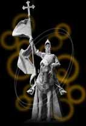

civilization
era of conquerors
bow down before the ones you serve
- nine inch nails, "head like a hole"
Survivors gathered and balkanized. The wisdom wars should have taught them did not survive. Hungry for a memory of Hy-brasyl glory, without the discipline to its creation in their heart, they used more of the darkness for conquest. Lord Tenes arose from them, forming a foolish alliance with six other lords and one inhuman thing. They called their alliance the League of Darkness.
They formed a pact called the Anaman. It was a foolish agreement between themselves and an agent of otherworldly chaos. They gained a thousand-year lifespan and the unification of Temuair. The pact was not purely evil. It allowed fresh souls to escape the realm of Chadul.
The League and outsiders divided Temuair into ten kingdoms, beginning the Dark Ages. Kings and Lords were tired of war. They gathered to try to create a pact of peace. They could not agree, out of greed. Tenes, though, got what he wanted.
A new lord stood against Tenes: Ainmeal. Ainmeal worshipped Danaan, and had the favor of the goddess. He swept through battle gracefully. Though not of the courtly upbringing of Tenes, Ainmeal exceeded in grace of wit and temperament. The sidh, the faerie races, were said to converse and aid Ainmeal in battle. A glow stood about him in battle. And a woe befell his adversaries.